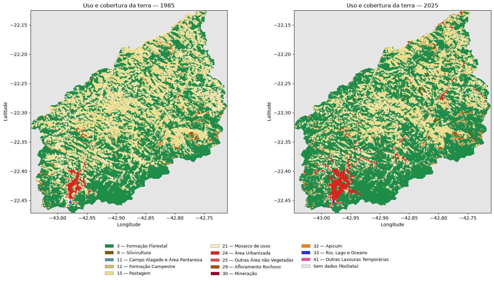

TERESÓPOLIS / RJ
O tempo transforma.
A paisagem conta.
Entre a floresta, a cidade e o campo: explore quatro décadas de mudanças no território de Teresópolis.
Explore os dados ↗SERRA DOS ÓRGÃOS · ILUSTRAÇÃO ESTILIZADA
O TERRITÓRIO EM NÚMEROS1985 → 2025
01 / DOIS ANOS, UM TERRITÓRIO
Como a paisagem se distribui?
Compare a participação de cada classe. Selecione um segmento para explorar.
1985 ⇄ 2025
02 / USO E COBERTURA DA TERRA
Cada classe, lado a lado.
Passe o mouse ou use o teclado para consultar os valores. Clique para conectar os painéis.
CLASSEÁREA POR ANO1985 → 2025VARIAÇÃO
Barras na mesma escala · variação relativa ao valor de 1985 · 1 ha = 10.000 m²
03 / CONEXÕES DA PAISAGEM
De onde veio. Para onde foi.
As transições mostram mudanças de classificação entre os dois anos.
Principais transições
Matriz de transições
1985 ↓ · 2025 →A diagonal mostra permanência. Os códigos identificam as classes.
Menor áreaMaior área · escala logarítmica
Passe o mouse, foque ou toque em uma célula.
Consultar códigos das classes
04 / OLHAR GEOGRÁFICO
As mudanças têm um lugar.
Mapas temáticos originais de Teresópolis em 1985 e 2025.

Imagem estática · não há consulta de pixels neste mapa. Explore os valores nos gráficos acima.